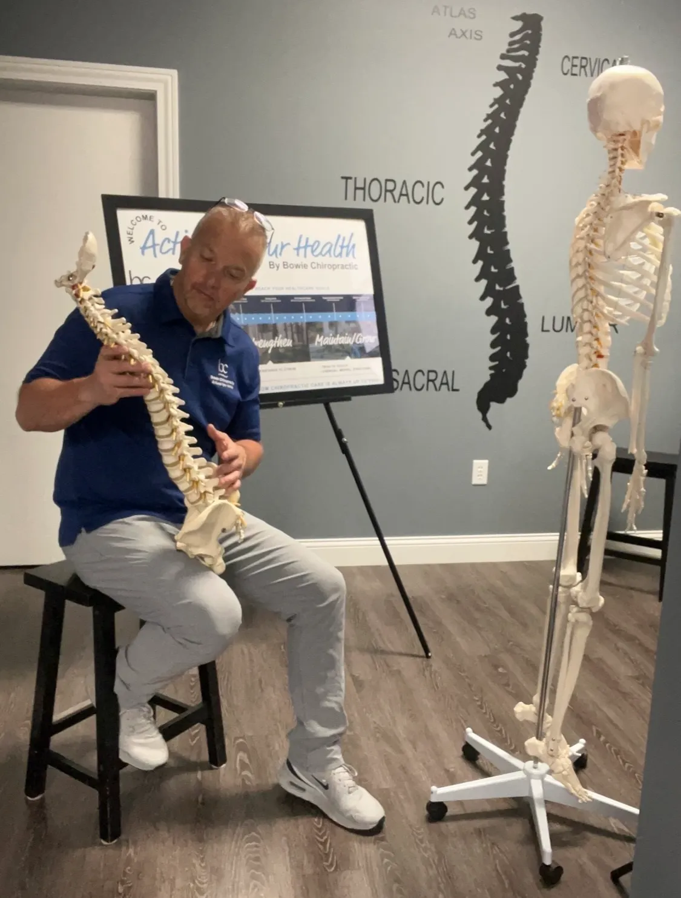

Muscle imbalances
When one muscle works harder because a neighbor is not pulling its weight, the strong one eventually complains. Testing helps show which is which.
Assessment Tool
A gentle, hands-on way to ask your body a question and get a useful answer. Muscle testing helps show how your nervous system, joints, and muscles are working together, so your care can be built on what is actually happening.
What It Is
Applied kinesiology uses gentle manual muscle testing to assess how well your nervous system, joints, and muscles are functioning together. In practice, it is simple and undramatic. Dr. Bowie positions a limb, applies light pressure to a specific muscle, and observes how that muscle responds.
A muscle that responds strongly and holds steady is one thing. A muscle that gives way, hesitates, or cannot hold a position is telling you something else, and the pattern across several tested muscles is where it gets genuinely useful.
It is worth being clear about what this is. Applied kinesiology is an assessment tool, not a treatment on its own. It does not fix anything by itself, and it does not replace an examination. It adds another source of information about how your body is functioning, alongside your history and how you move.
Nothing about it is forceful or uncomfortable. If a test causes pain, say so, and it stops.

What It Can Reveal
Muscle testing helps point toward issues that are easy to miss when you only look at the spot that hurts.
When one muscle works harder because a neighbor is not pulling its weight, the strong one eventually complains. Testing helps show which is which.
A joint that has stopped moving well changes how the muscles around it fire. That shows up in testing before it necessarily shows up as pain.
Muscles depend on clear signals. When a nerve is irritated or compressed, the muscles it supplies often respond differently under testing.
The chemical and mental sides of the Triad of Health leave physical traces. Testing can help flag when something beyond structure is contributing.

The Benefits
How It Fits Together
Applied kinesiology is not a service you book instead of chiropractic care. Dr. Bowie uses it alongside adjustments, because the two answer different questions. Muscle testing helps show where the problem is and what is contributing to it. The adjustment and supporting therapies do something about it.
That combination is what keeps care from becoming guesswork. Testing a muscle before and after an adjustment gives immediate feedback about whether the change did what it was meant to do, so your plan can adapt as your body responds instead of following a script written on day one.
It comes back to the same principle behind everything here. Your body is one connected system. The structure, the chemistry, and the mental load all feed into each other, and treating them as separate is how problems get missed.
Start Here
Your first visit is a free consultation and evaluation. No pressure, no commitment, and no obligation to book anything afterward. Just a clear picture of what is going on.